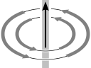
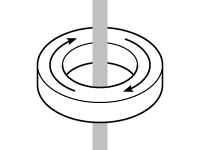

We outline the theory of magnetic core memory, and describe the design and fabrication of a core memory Arduino shield.
Magnetic core memory was the most widely used form of digital computer memory from its birth in the early 1950s until the era of integrated-circuit memory began in the early 1970s. Aside from being extremely reliable, magnetic core memory is an appealing technology because it is based on a very simple idea.
A magnetic core is a ring of ferrite material. It can be permanently magnetised either clockwise or anti-clockwise about its axis just as a vertical bar magnet can be magnetised up or down. We can then turn a magnetic core into a bit of digital memory by letting these two magnetisation states correspond to 0 and 1.
The core needs no power to retain its data. In other words, core memory is a form of non-volatile storage like modern hard disk drives, although in its day it fulfilled the ‘high-speed’ role of modern RAM.
With many such cores, large memory modules were made, such as this example from a CDC machine of the mid-1960s. The right-hand image shows a close-up of the cores themselves.
| 50mm | 2mm |
As the technology developed [1], the cores shrank from c.2mm diameter in the early 1950s to c.0.4mm by the early 1970s. Access speeds rose at the same time, from about 200kHz to over 1MHz, and core memory modules were manufactured with as many as over half a million cores. Furthermore, as recently as 2004, a magnetic core memory system was found still in service in a telephony control system.
Magnetic core memory continues to capture the imaginations of modern enthusiasts [2], [3], and it is also the origin of the term core dump, to mean an on-disk image of the main memory of a process.
The Arduino, whose Duemilanove version is shown above [5], is an open-source physical computing device. It has removed many of the hurdles for people wishing to explore embedded microprocessing. An Arduino is a small single-board computer based on an Atmel AVR microprocessor, with supporting components to handle USB communications and provide easy access to input/output pins. The developer programs the on-board microprocessor using an IDE running on a PC. It has proved very popular, with six-figure sales, and has been used in projects as diverse as autopilots for radio-controlled aeroplanes, and CNC sewing machines.
Several expansion modules exist, allowing the Arduino to perform a greater variety of tasks. These secondary modules, or shields, are circuit boards that plug into the Arduino’s pin headers, and supply additional hardware to, for example, drive motors or servos, interface with wireless communication modules, or communicate over Ethernet.
We had developed an interest in the principles and practice of core memory, and the creation of a modern core memory module struck us as an appealing challenge. Eventually a pleasing idea suggested itself: we decided to build a magnetic core memory Arduino shield.
Our project was made possible thanks to the existence of a supply of surplus ferrite cores manufactured in the 1980s for the magnetic core memory systems of the time. We decided that we would use these old cores but permit ourselves to use modern components (transistors, integrated-circuit logic gates, etc.). This made our work enormously easier than that of the original core memory inventors and manufacturers. Also, we knew that our end goal was possible.
We succeeded in building an extremely reliable 32-bit core memory shield for the Arduino. It can be used as storage for the Arduino, or alternatively, any modern computing device with a USB port can now read and write to magnetic core memory.
| Start off with a core magnetised in the anti-clockwise direction: | Apply a weak clockwise external field. This reduces the strength of the anti-clockwise magnetism in the core: | But when the external field is removed, the magnetism in the core ‘springs back’ to its original state: |
However, if we apply a sufficiently strong magnetic field in the opposite direction, the core will switch from one magnetic state to the other:
| Start off with a core magnetised in the anti-clockwise direction: | Apply a strong clockwise external field. This switches the core’s magnetism, and the core now has clockwise magnetism: | When this external field is removed, the magnetism in the core reduces slightly in strength, but remains clockwise: |
The next essential physical fact is that a DC current in a wire creates a magnetic field circulating about the wire, whose strength is proportional to the size of the current. If we reverse the direction of the current, the magnetic field circulates in the opposite direction:
| Small current down; weak clockwise field | Large current down; strong clockwise field | Small current up; weak anti-c/w field | Large current up; strong anti-c/w field |
|  |
We now know enough to write one bit of core memory. Having threaded a wire through a core, we can cause the core to become magnetised in the clockwise direction by passing a strong enough current in one direction through the wire, and we can cause the core to become magnetised in the anti-clockwise direction by passing a strong enough current in the opposite direction. These two operations correspond to writing 0 and 1 to the core. The magnetisation of the core, and so the bit stored, remains even after the current stops flowing.
| The core is magnetised anti-clockwise, and therefore holds the bit 1. No current flows through the wire. | A large current is supplied, generating a strong magnetic field. This switches the core’s magnetisation to clockwise. | When the current is turned off, the core remains magnetised clockwise, therefore now holding 0. |
|  |
Core memory would probably have been a lot less popular had it been a write-only technology. To see how to read from the core, we need a further piece of physics: a changing magnetic field induces a voltage.
Consider a core which is magnetised anti-clockwise. If we apply current which tries to increase this anti-clockwise magnetisation, it does not in fact change the magnetic field in the core much — it is already saturated. If, however, we apply enough current in the opposite direction, the core switches to be magnetised clockwise, as shown above. This process takes a small amount of time, around 1us for typical cores. During that time, the magnetic field is undergoing a large change, and so induces a noticeable voltage.
The setup for reading the state of a core then is to have two wires passing through the core. We use one wire, the drive line, for driving current back and forth and so to set the state of the core, and we have circuitry connected to the second wire, the sense line, to measure the induced voltages.
We start the process of reading the core by writing a 0 to it using the drive line. If we observe no significant induced voltage on the sense line then we learn the core was already in state 0. If, however, we observe a large induced voltage on the sense line then we learn that the core contained a 1 (and we then write 1 back to the core). The memory is said to operate with a destructive read.
At this point it may help to make this more concrete by exhibiting some real data. Below we present the results of one of our experiments in which we measured the induced voltage on the sense line when writing 0 to a core which contained 1, and when writing 0 to a core which already contained 0.
| If a core switches from one magnetisation direction to the other, the changing magnetic field induces a voltage that peaks at c.35mV, staying above 20mV for c.600ns | However, if the applied field is in the same direction as the core’s existing magnetisation, no switching takes places, and we observe a negligible voltage: |
We also see voltage ‘spikes’ caused by the drive line currents switching on and off. These transformer-action spikes are significant in magnitude but are short and temporally separated from the switching signal. The pulse shown is in fact the base drive of transistors, and the turn-on and turn-off delays are visible.
We could now build a one-bit read-write core memory system.
However, we want to have more than one bit of memory without needing one drive line per core. We make use of a feature of the hysteresis behaviour of the core. We previously talked in terms of ‘weak’ or ‘strong’ external magnetic fields. Slightly more quantitatively: the core is not switched by a field which is half as strong as one which is just strong enough to switch the core. The field is proportional to the current in the drive line, so if we pass half the current required to just switch a core through the drive line, the core will not switch state.
Now suppose we have $nm$ cores and we arrange them in an $n\times m$ rectangular array such that each core has one of $n$ horizontal and one of $m$ vertical drive lines passing through it. With this setup we can selectively set the $(i, j)$th core and no other by simultaneously driving the $i$th vertical drive line and $j$th horizontal drive line in the appropriate directions, each with half the current required for switching. For example, in a $4\times4$ array, with the cores viewed edge-on, we switch the core shown:
The picture we should now have in mind of a core memory module is a rectangular array of cores, with one vertical and one horizontal drive line passing through each core. There is a further drive-line economy, which cuts in half the number of drive lines in one dimension.
Consider a core with its two drive lines. There are then four combinations of current direction. Two combinations produce a reinforcing field round the core, but in the other two, the fields cancel round the core:
| Reinforce to write 0: | Reinforce to write 1: | Cancel; no effect: | Cancel; no effect: |
|
We say the currents or fields are coincident if they reinforce, and anti-coincident if they cancel.
Now consider two cores arranged as below. We still have two drive lines, but we have turned one of the drive lines through two right angles so that it passes through both cores but in opposite directions. If we now consider the four possible simultaneous states of the drive lines, we find that all possible combinations are put to use:
| Write 0 to left core: | Write 1 to left core: | Write 0 to right core: | Write 1 to right core: |
To take the concrete example of the small core array we built, we show a $8\times4$ array. We also now illustrate the single sense line which runs through all cores. The alternating alignment of the cores makes the threading of the sense loop easier, and also reduces the transformer-action spikes.
The array of cores can be thought of as two halves, with each core in the left half having an anti-coincident partner in the right half sharing the same pair of drive lines.
As noted above, we organise the 32-bit module as a rectangular array with 4 rows and 8 columns in which the columns are paired as above using anti-coincidence. As a result, we have 4 vertical and 4 horizontal drive lines to control. Our current-driving problem is thus two instances of the same problem: we need to be able to select one of four lines, and to specify a direction in which to drive current along that line.
Our current sources and sinks are transistors, and we could accomplish our goal by connecting each end of each drive line to the collectors of both a PNP and an NPN transistor (i.e., by using four H-bridge circuits). This would work, but would be inefficient in terms of the number of transistors used. By introducing a few diodes, we can use a design with half as many transistors.
By turning on the correct transistors in the following circuit, we can send current in either direction through any of the drive lines. The resistors $R_1$ and $R_2$ control how much current flows. We discuss their value below.
As we have already discussed, it is important that we drive the right amount of current. It must be low enough that the magnetic field produced by the current in one drive line is not enough to switch a core, but high enough that the combined field from two coincident currents does produce switching. We determined the range of possible values of current for our cores empirically and established that any value in the range 250–340mA works. We set the current by choosing appropriate values for the resistors in the drive circuit above.
In the circuit above, we want to know which transistors to turn on to drive current left or right in one of the four lines. We must be able to pulse this current, and so we need to be able to stop all drive currents. Let the enable Boolean variable be $E$. Let the variable $D_X$ give the direction, with $D_X=0$ being leftwards. In order to drive the line $X_{A_1A_2}$ in the direction $D_X$ (as long as $E$ is asserted), the base of transistor $Q^P_{11}$, for example, must be taken high or low according to $$Q^P_{11} = \overline{E \wedge D_X \wedge A_1}.$$ In words, $Q^P_{11}$ must be on (i.e., its base must be pulled low) exactly when we are enabled ($E=1$) and we wish to drive current rightwards ($D_X=1$) through either $X_{10}$ or $X_{11}$ (those two lines have $A_1=1$). The formulae for all eight transistors are:
| $Q^P_{10} = \overline{E \wedge D_X \wedge \overline{A_1}}$ | $Q^P_{20} = \overline{E \wedge \overline{D_X} \wedge \overline{A_2}}$ |
| $Q^N_{10} = E \wedge \overline{D_X} \wedge \overline{A_1}$ | $Q^N_{20} = E \wedge D_X \wedge \overline{A_2}$ |
| $Q^P_{11} = \overline{E \wedge D_X \wedge A_1}$ | $Q^P_{21} = \overline{E \wedge \overline{D_X} \wedge A_2}$ |
| $Q^N_{11} = E \wedge \overline{D_X} \wedge A_1$ | $Q^N_{21} = E \wedge D_X \wedge A_2$ |
Recall that the current-driving circuitry consists of two instances of this driving circuit, horizontal and vertical. We thus have bits $A_1$, $A_2$, and $D_X$ for the first instance and $A_3$, $A_4$, and $D_Y$, say, for the second. We can generate a switching field in either direction for any of our 32 cores by choosing values for these six bits, and then controlling transistor bases accordingly. Furthermore, looking back at section 2.6, we see that the tuple $(A_1, A_2, A_3, A_4)$ determines a pair of anti-coincident partner cores and that it is the value of $A_0 := D_X \oplus D_Y$ that distinguishes between these two partner cores. Therefore we reparameterise our six control bits in terms of the five-bit address $A_4A_3A_2A_1A_0$ and the single data bit $D := D_X$. We then have $D_Y = D_X \oplus A_0$. The 32 cores are now numbered, since each core has a unique five-bit address $A_4A_3A_2A_1A_0$. The layout of these addresses in the $8\times 4$ array may appear a little haphazard, but this does not matter.
With the current-driving and addressing circuitry in place, it remains only to describe how to detect the presence or absence of a core-switching signal on the sense line. We chose the comparator-based circuit described in [1] (and apparently of unknown German origin):
The obvious two-fold symmetry of this circuit reflects the possibility that a sense pulse from a switching core can bias $SA$ positively or negatively relative to $SB$ depending on whether a core is switching from a clockwise to an anti-clockwise magnetisation state relative to the sense line or vice-versa.
The resistors ensure that, when no voltage is present across $SA$/$SB$, each comparator’s inverting input is 20mV above its non-inverting, and so both outputs are low. If a positive sense pulse occurs, causing $SA$ to rise more than 20mV above $SB$, the left comparator will detect this and output ‘high’. Conversely for a negative sense pulse, the right comparator will fire. We or the two to detect pulses of either polarity. The threshold of 20mV was chosen by experiment.
The final detail of the sense circuitry is that we used a timed latch to catch and store the output of the or gate at the appropriate moment. This ensures that we are not affected by any high comparator outputs caused by the transformer-action spikes. The timer delay was chosen by experiment as 650ns, although any value 500–900ns worked.
We finally achieved our goal of building a core memory shield by having our schematics fabricated as PCBs. Owing to some late design changes, we then had to patch the boards slightly; the circuits described here include the changes. Eagle files for these schematics and PCBs as well as the Gerber files are available here. Also contained in the Eagle files are the part numbers for the various components (transistors, logic gates, comparators, etc.) that we used.
Once the core board, driver board and Arduino have been appropriately mated, it is easy to use the Arduino to read from and write to the core memory array. To send a write pulse to a core, the Arduino writes the data bit to digital pin 8, writes the address of the core in question to digital pins 3–7 and then asserts enable (digital pin 2) for 2us. Once this is done, reading digital pin 9 reveals whether the core changed state. Cycle time is such that a 32-bit operation takes 0.5ms, although preliminary experiments suggest that by being more aggressive on the timings we could bring this down to 0.3ms.
These operations are presented as the functions write_bit and read_bit. Loops turn these into write_word and read_word, to act on the whole core board as a single 32-bit unsigned integer. A further natural operation is a bit exchange. This, in one operation, writes a new data bit to a core, and returns the old value, which can be deduced as (latched-sense-output) xor (new-data). The source-code for this API, with a command-line interface presented on the serial port, is available for download here.
We used this interface to extensively test the core memory shield. After running continuously for over one hundred hours, the shield had performed over ten billion successful bit-exchange operations without a single error.
Building a reliable 32-bit core memory shield for the Arduino proved to be a natural stopping point for our work, but there is certainly more that could be done. Some ideas for future work that appealed to us:
Secondly, the core board’s schematic:
The terminating resistor across the sense loop provides a path for the current caused by the induced voltage round the loop.